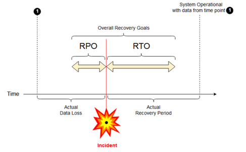

Disaster recovery
A clear disaster recovery pattern is critical for a cloud-native data analytics platform such as Databricks. It’s critical that your data teams can use the Databricks platform even in the rare case of a regional service-wide cloud-service provider outage, whether caused by a regional disaster like a hurricane or earthquake, or other source.
Databricks is often a core part of an overall data ecosystem that includes many services, including upstream data ingestion services (batch/streaming), cloud native storage such as Amazon S3, downstream tools and services such as business intelligence apps, and orchestration tooling. Some of your use cases might be particularly sensitive to a regional service-wide outage.
This article describes concepts and best practices for a successful interregional disaster recovery solution for the Databricks platform.
Important
This article mentions the term compute plane, which is the compute layer of the Databricks platform. In the context of this article, compute plane refers to the classic compute plane in your AWS account. By contrast, the serverless compute plane that supports serverless SQL warehouses runs in your Databricks account. To learn more, see Serverless compute.
Previously, Databricks referred to the compute plane as the data plane.
Disaster recovery overview
Disaster recovery involves a set of policies, tools, and procedures that enable the recovery or continuation of vital technology infrastructure and systems following a natural or human-induced disaster. A large cloud service like AWS serves many customers and has built-in guards against a single failure. For example, a region is a group of buildings connected to different power sources to guarantee that a single power loss will not shut down a region. However, cloud region failures can happen, and the degree of disruption and its impact on your organization can vary.
Before implementing a disaster recovery plan, it’s important to understand the difference between disaster recovery (DR) and high availability (HA).
High availability is a resiliency characteristic of a system. High availability ensures a minimum level of operational performance that is usually defined in terms of consistent uptime or percentage of uptime. High availability is implemented in place (in the same region as your primary system) by designing it as a feature of the primary system. For example, cloud services like AWS have high-availability services such as Amazon S3. High availability does not require significant explicit preparation from the Databricks customer.
In contrast, a disaster recovery plan requires decisions and solutions that work for your specific organization to handle a larger regional outage for critical systems. This article discusses common disaster recovery terminology, common solutions, and some best practices for disaster recovery plans with Databricks.
Terminology
Region terminology
This article uses the following definitions for regions:
Primary region: The geographic region in which users run typical daily interactive and automated data analytics workloads.
Secondary region: The geographic region in which IT teams move data analytics workloads temporarily during an outage in the primary region.
Geo-redundant storage: AWS has geo-redundant storage across regions for persisted buckets using an asynchronous storage replication process.
Important
For disaster recovery processes, Databricks recommends that you do not rely on geo-redundant storage for cross-region duplication of data such as your root S3 bucket. In general, use Deep Clone for Delta Tables and convert data to Delta format to use Deep Clone if possible for other data formats.
Deployment status terminology
This article uses the following definitions of deployment status:
Active deployment: Users can connect to an active deployment of a Databricks workspace and run workloads. Jobs are scheduled periodically using Databricks scheduler or other mechanism. Data streams can be executed on this deployment as well. Some documents might refer to an active deployment as a hot deployment.
Passive deployment: Processes do not run on a passive deployment. IT teams can setup automated procedures to deploy code, configuration, and other Databricks objects to the passive deployment. A deployment becomes active only if a current active deployment is down. Some documents might refer to a passive deployment as a cold deployment.
Important
A project can optionally include multiple passive deployments in different regions to provide additional options for resolving regional outages.
Generally speaking, a team has only one active deployment at a time, in what is called an active-passive disaster recovery strategy. There is a less common disaster recovery solution strategy called active-active, in which there are two simultaneous active deployments.
Disaster recovery industry terminology
There are two important industry terms that you must understand and define for your team:
Recovery point objective: A recovery point objective (RPO) is the maximum targeted period in which data (transactions) might be lost from an IT service due to a major incident. Your Databricks deployment does not store your main customer data. That is stored in separate systems such as Amazon S3 or other data sources under your control. The Databricks control plane stores some objects in part or in full, such as jobs and notebooks. For Databricks, the RPO is defined as the maximum targeted period in which objects such as job and notebook changes can be lost. Additionally, you are responsible for defining the RPO for your own customer data in Amazon S3 or other data sources under your control.
Recovery time objective: The recovery time objective (RTO) is the targeted duration of time and a service level within which a business process must be restored after a disaster.

Disaster recovery and data corruption
A disaster recovery solution does not mitigate data corruption. Corrupted data in the primary region is replicated from the primary region to a secondary region and is corrupted in both regions. There are other ways to mitigate this kind of failure, for example Delta time travel.
Typical recovery workflow
A Databricks disaster recovery scenario typically plays out in the following way:
A failure occurs in a critical service you use in your primary region. This can be a data source service or a network that impacts the Databricks deployment.
You investigate the situation with the cloud provider.
If you conclude that your company cannot wait for the problem to be remediated in the primary region, you may decide you need failover to a secondary region.
Verify that the same problem does not also impact your secondary region.
Fail over to a secondary region.
Stop all activities in the workspace. Users stop workloads. Users or administrators are instructed to make a backup of the recent changes if possible. Jobs are shut down if they haven’t already failed due to the outage.
Start the recovery procedure in the secondary region. The recovery procedure updates routing and renaming of the connections and network traffic to the secondary region.
After testing, declare the secondary region operational. Production workloads can now resume. Users can log in to the now active deployment. You can retrigger scheduled or delayed jobs.
For detailed steps in a Databricks context, see Test failover.
At some point, the problem in the primary region is mitigated and you confirm this fact.
Restore (fail back) to your primary region.
Stop all work on the secondary region.
Start the recovery procedure in the primary region. The recovery procedure handles routing and renaming of the connection and network traffic back to the primary region.
Replicate data back to the primary region as needed. To reduce complexity, perhaps minimize how much data needs to be replicated. For example, if some jobs are read-only when run in the secondary deployment, you may not need to replicate that data back to your primary deployment in the primary region. However, you may have one production job that needs to run and may need data replication back to the primary region.
Test the deployment in the primary region.
Declare your primary region operational and that it is your active deployment. Resume production workloads.
For more information about restoring to your primary region, see Test restore (failback).
Important
During these steps, some data loss might happen. Your organization must define how much data loss is acceptable and what you can do to mitigate this loss.
Step 1: Understand your business needs
Your first step is to define and understand your business needs. Define which data services are critical and what is their expected RPO and RTO.
Research the real-world tolerance of each system, and remember that disaster recovery failover and failback can be costly and carries other risks. Other risks might include data corruption, data duplicated if you write to the wrong storage location, and users who log in and make changes in the wrong places.
Map all of the Databricks integration points that affect your business:
Does your disaster recovery solution need to accommodate interactive processes, automated processes, or both?
Which data services do you use? Some may be on-premises.
How does input data get to the cloud?
Who consumes this data? What processes consume it downstream?
Are there third-party integrations that need to be aware of disaster recovery changes?
Determine the tools or communication strategies that can support your disaster recovery plan:
What tools will you use to modify network configurations quickly?
Can you predefine your configuration and make it modular to accommodate disaster recovery solutions in a natural and maintainable way?
Which communication tools and channels will notify internal teams and third-parties (integrations, downstream consumers) of disaster recovery failover and failback changes? And how will you confirm their acknowledgement?
What tools or special support will be needed?
What services if any will be shut down until complete recovery is in place?
Step 2: Choose a process that meets your business needs
Your solution must replicate the correct data in both control plane, compute plane, and data sources. Redundant workspaces for disaster recovery must map to different control planes in different regions. You must keep that data in sync periodically using a script-based solution, either a synchronization tool or a CI/CD workflow. There is no need to synchronize data from within the compute plane network itself, such as from Databricks Runtime workers.
If you use the customer-managed VPC feature (not available with all subscription and deployment types), you can consistently deploy these networks in both regions using template-based tooling such as Terraform.
Additionally, you need to ensure that your data sources are replicated as needed across regions.
General best practices
General best practices for a successful disaster recovery plan include:
Understand which processes are critical to the business and have to run in disaster recovery.
Clearly identify which services are involved, which data is being processed, what the data flow is and where it is stored
Isolate the services and data as much as possible. For example, create a special cloud storage container for the data for disaster recovery or move Databricks objects that are needed during a disaster to a separate workspace.
It is your responsibility to maintain integrity between primary and secondary deployments for other objects that are not stored in the Databricks Control Plane.
Warning
It is a best practice not to store any data elements in the root Amazon S3 bucket that is used for root DBFS access for the workspace. That root DBFS storage is not supported for production customer data. However, you might store other objects such as libraries, configuration files, init scripts, and similar data. Either develop an automated process to replicate these objects, or remember to have processes in place to update the secondary deployment for manual deployment.
For data sources, where possible, it is recommended that you use native AWS tools for replication and redundancy to replicate data to the disaster recovery regions.
Choose a recovery solution strategy
Typical disaster recovery solutions involve two (or possibly more) workspaces. There are several strategies you can choose. Consider the potential length of the disruption (hours or maybe even a day), the effort to ensure that the workspace is fully operational, and the effort to restore (fail back) to the primary region.
Active-passive solution strategy
An active-passive solution is the most common and the easiest solution, and this type of solution is the focus of this article. An active-passive solution synchronizes data and object changes from your active deployment to your passive deployment. If you prefer, you could have multiple passive deployments in different regions, but this article focuses on the single passive deployment approach. During a disaster recovery event, the passive deployment in the secondary region becomes your active deployment.
There are two main variants of this strategy:
Unified (enterprise-wise) solution: Exactly one set of active and passive deployments that support the entire organization.
Solution by department or project: Each department or project domain maintains a separate disaster recovery solution. Some organizations want to decouple disaster recovery details between departments and use different primary and secondary regions for each team based on the unique needs of each team.
There are other variants, such as using a passive deployment for read-only use cases. If you have workloads that are read-only, for example user queries, they can run on a passive solution at any time if they do not modify data or Databricks objects such as notebooks or jobs.
Active-active solution strategy
In an active-active solution, you run all data processes in both regions at all times in parallel. Your operations team must ensure that a data process such as a job is marked as complete only when it finishes successfully on both regions. Objects cannot be changed in production and must follow a strict CI/CD promotion from development/staging to production.
An active-active solution is the most complex strategy, and because jobs run in both regions, there is additional financial cost.
Just as with the active-passive strategy, you can implement this as a unified organization solution or by department.
You may not need an equivalent workspace in the secondary system for all workspaces, depending on your workflow. For example, perhaps a development or staging workspace may not need a duplicate. With a well-designed development pipeline, you may be able to reconstruct those workspaces easily if needed.
Choose your tooling
There are two main approaches for tools to keep data as similar as possible between workspaces in your primary and secondary regions:
Synchronization client that copies from primary to secondary: A sync client pushes production data and assets from the primary region to the secondary region. Typically this runs on a scheduled basis.
CI/CD tooling for parallel deployment: For production code and assets, use CI/CD tooling that pushes changes to production systems simultaneously to both regions. For example, when pushing code and assets from staging/development to production, a CI/CD system makes it available in both regions at the same time. The core idea is to treat all artifacts in a Databricks workspace as infrastructure-as-code. Most artifacts could be co-deployed to both primary and secondary workspaces, while some artifacts may need to be deployed only after a disaster recovery event. For tools, see Automation scripts, samples, and prototypes.
The following diagram contrasts these two approaches.
Depending on your needs, you could combine the approaches. For example, use CI/CD for notebook source code but use synchronization for configuration like pools and access controls.
The following table describes how to handle different types of data with each tooling option.
Description |
How to handle with CI/CD tooling |
How to handle with sync tool |
|---|---|---|
Source code: notebook source exports and source code for packaged libraries |
Co-deploy both to primary and secondary. |
Synchronize source code from primary to secondary. |
Users and groups |
Manage metadata as config in Git. Alternatively, use the same identity provider (IdP) for both workspaces. Co-deploy user and group data to primary and secondary deployments. |
Use SCIM or other automation for both regions. Manual creation is not recommended, but if used must be done for both at the same time. If you use a manual setup, create a scheduled automated process to compare the list of users and group between the two deployments. |
Pool configurations |
Can be templates in Git. Co-deploy to primary and secondary. However, |
Pools created with any |
Job configurations |
Can be templates in Git. For primary deployment, deploy the job definition as is. For secondary deployment, deploy the job and set the concurrencies to zero. This disables the job in this deployment and prevents extra runs. Change the concurrencies value after the secondary deployment becomes active. |
If the jobs run on existing |
Access control lists (ACLs) |
Can be templates in Git. Co-deploy to primary and secondary deployments for notebooks, folders, and clusters. However, hold the data for jobs until the disaster recovery event. |
The Permissions API can set access controls for clusters, jobs, pools, notebooks, and folders. A sync client needs to map to corresponding object IDs for each object in the secondary workspace. Databricks recommends creating a map of object IDs from primary to secondary workspace while syncing those objects before replicating the access controls. |
Libraries |
Include in source code and cluster/job templates. |
Sync custom libraries from centralized repositories, DBFS, or cloud storage (can be mounted). |
Include in source code if you prefer. |
For simpler synchronization, store init scripts in the primary workspace in a common folder or in a small set of folders if possible. |
|
Mount points |
Include in source code if created only through notebook-based jobs or Command API. |
Use jobs. Note that the storage endpoints might change, given that workspaces would be in different regions. This depends a lot on your data disaster recovery strategy as well. |
Table metadata |
Include with source code if created only through notebook-based jobs or Command API. This applies to both internal Databricks metastore or external configured metastore. |
Compare the metadata definitions between the metastores using Spark Catalog API or Show Create Table via a notebook or scripts. Note that the tables for underlying storage can be region-based and will be different between metastore instances. |
Secrets |
Include in source code if created only through Command API. Note that some secrets content might need to change between the primary and secondary. |
Secrets are created in both workspaces via the API. Note that some secrets content might need to change between the primary and secondary. |
Cluster configurations |
Can be templates in Git. Co-deploy to primary and secondary deployments, although the ones in secondary deployment should be terminated until the disaster recovery event. |
Clusters are created after they are synced to the secondary workspace using the API or CLI. Those can be explicitly terminated if you want, depending on auto-termination settings. |
Notebook, job, and folder permissions |
Can be templates in Git. Co-deploy to primary and secondary deployments. |
Replicate using the Permissions API. |
Choose regions and multiple secondary workspaces
You need full control of your disaster recovery trigger. You may decide to trigger this at any time or for any reason. You must take responsibility for disaster recovery stabilization before you can restart your operation failback (normal production) mode. Typically this means that you need to create multiple Databricks workspaces to serve your production and disaster recovery needs, and choose your secondary failover region.
In AWS, you can have full control of the chosen secondary region. Ensure that all of your resources and products are available there, such as EC2. Some Databricks services are available only in some regions. If your Databricks account is on the E2 version of the platform, you must choose among the supported AWS regions for the E2 version of the platform.
Step 3: Prep workspaces and do a one-time copy
If a workspace is already in production, it is typical to run a one-time copy operation to synchronize your passive deployment with your active deployment. This one time copy handles the following:
Data replication: Replicate using a cloud replication solution or Delta Deep Clone operation.
Token generation: Use token generation to automate the replication and future workloads.
Workspace replication: Use workspace replication using the methods described in Step 4: Prepare your data sources.
Workspace validation: - test to make sure that the workspace and the process can execute successfully and provide the expected results.
After your initial one-time copy operation, subsequent copy and sync actions are faster and any logging from your tools is also a log of what changed and when it changed.
Step 4: Prepare your data sources
Databricks can process a large variety of data sources using batch processing or data streams.
Batch processing from data sources
When data is processed in batch, it usually resides in a data source that can be replicated easily or delivered into another region.
For example, data might regularly be uploaded to a cloud storage location. In disaster recovery mode for your secondary region, you must ensure that the files will be uploaded to your secondary region storage. Workloads must read the secondary region storage and write to the secondary region storage.
Data streams
Processing a data stream is a bigger challenge. Streaming data can be ingested from various sources and be processed and sent to a streaming solution:
Message queue such as Kafka
Database change data capture stream
File-based continuous processing
File-based scheduled processing, also known as trigger once
In all of these cases, you must configure your data sources to handle disaster recovery mode and to use your secondary deployment in your secondary region.
A stream writer stores a checkpoint with information about the data that has been processed. This checkpoint can contain a data location (usually cloud storage) that has to be modified to a new location to ensure a successful restart of the stream. For example, the source subfolder under the checkpoint might store the file-based cloud folder.
This checkpoint must be replicated in a timely manner. Consider synchronization of the checkpoint interval with any new cloud replication solution.
The checkpoint update is a function of the writer and therefore applies to data stream ingestion or processing and storing on another streaming source.
For streaming workloads, ensure that checkpoints are configured in customer-managed storage so that they can be replicated to the secondary region for workload resumption from the point of last failure. You might also choose to run the secondary streaming process in parallel to the primary process.
Step 5: Implement and test your solution
Periodically test your disaster recovery setup to ensure that it functions correctly. There’s no value in maintaining a disaster recovery solution if you cannot use it when you need it. Some companies switch between regions every few months. Switching regions on a regular schedule tests your assumptions and processes and ensures that they meet your recovery needs. This also ensures that your organization is familiar with the policies and procedures for emergencies.
Important
Regularly test your disaster recovery solution in real-world conditions.
If you discover that you are missing an object or template and still need to rely on the information stored in your primary workspace, modify your plan to remove these obstacles, replicate this information in the secondary system, or make it available in some other way.
Test any required organizational changes to your processes and to configuration in general. Your disaster recovery plan impacts your deployment pipeline, and it is important that your team knows what needs to be kept in sync. After you set up your disaster recovery workspaces, you must ensure that your infrastructure (manual or code), jobs, notebook, libraries, and other workspace objects are available in your secondary region.
Talk with your team about how to expand standard work processes and configuration pipelines to deploy changes to all workspaces. Manage user identities in all workspaces. Remember to configure tools such as job automation and monitoring for new workspaces.
Plan for and test changes to configuration tooling:
Ingestion: Understand where your data sources are and where those sources get their data. Where possible, parameterize the source and ensure that you have a separate configuration template for working with your secondary deployments and secondary regions. Prepare a plan for failover and test all assumptions.
Execution changes: If you have a scheduler to trigger jobs or other actions, you may need to configure a separate scheduler that works with the secondary deployment or its data sources. Prepare a plan for failover and test all assumptions.
Interactive connectivity: Consider how configuration, authentication, and network connections might be affected by regional disruptions for any use of REST APIs, CLI tools, or other services such as JDBC/ODBC. Prepare a plan for failover and test all assumptions.
Automation changes: For all automation tools, prepare a plan for failover and test all assumptions.
Outputs: For any tools that generate output data or logs, prepare a plan for failover and test all assumptions.
Test failover
Disaster recovery can be triggered by many different scenarios. It can be triggered by an unexpected break. Some core functionality may be down, including the cloud network, cloud storage, or another core service. You do not have access to shut down the system gracefully and must try to recover. However, the process could be triggered by a shutdown or planned outage, or even by periodic switching of your active deployments between two regions.
When you test failover, connect to the system and run a shutdown process. Ensure that all jobs are complete and the clusters are terminated.
A sync client (or CI/CD tooling) can replicate relevant Databricks objects and resources to the secondary workspace. To activate your secondary workspace, your process might include some or all of the following:
Run tests to confirm that the platform is up to date.
Disable pools and clusters on the primary region so that if the failed service returns online, the primary region does not start processing new data.
Recovery process:
Check the date of the latest synced data. See Disaster recovery industry terminology. The details of this step vary based on how you synchronize data and your unique business needs.
Stabilize your data sources and ensure that they are all available. Include all external data sources, such as AWS RDS, as well as your Delta Lake, Parquet, or other files.
Find your streaming recovery point. Set up the process to restart from there and have a process ready to identify and eliminate potential duplicates (Delta Lake Lake makes this easier).
Complete the data flow process and inform the users.
Start relevant pools (or increase the
min_idle_instancesto relevant number).Start relevant clusters (if not terminated).
Change the concurrent run for jobs and run relevant jobs. These could be one-time runs or periodic runs.
For any outside tool that uses a URL or domain name for your Databricks workspace, update configurations to account for the new control plane. For example, update URLs for REST APIs and JDBC/ODBC connections. The Databricks web application’s customer-facing URL changes when the control plane changes, so notify your organization’s users of the new URL.
Test restore (failback)
Failback is easier to control and can be done in a maintenance window. This plan can include some or all of the following:
Get confirmation that the primary region is restored.
Disable pools and clusters on the secondary region so it will not start processing new data.
Sync any new or modified assets in the secondary workspace back to the primary deployment. Depending on the design of your failover scripts, you might be able to run the same scripts to sync the objects from the secondary (disaster recovery) region to the primary (production) region.
Sync any new data updates back to the primary deployment. You can use the audit trails of logs and Delta tables to guarantee no loss of data.
Shut down all workloads in the disaster recovery region.
Change the jobs and users URL to the primary region.
Run tests to confirm that the platform is up to date.
Start relevant pools (or increase the
min_idle_instancesto a relevant number) .Start relevant clusters (if not terminated).
Change the concurrent run for jobs, and run relevant jobs. These could be one-time runs or periodic runs.
As needed, set up your secondary region again for future disaster recovery.
Automation scripts, samples, and prototypes
Automation scripts to consider for your disaster recovery projects:
Databricks recommends that you use the Databricks Terraform Provider to help develop your own sync process.
See also Databricks Workspace Migration Tools for sample automation and prototype scripts.
The Databricks Sync (DBSync) project is an object synchronization tool that backs up, restores, and syncs Databricks workspaces.